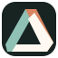

08
Impossible Path
An over-under loop whose stacking cannot exist in physical space: precise, compact and puzzle-like.
16243248
16243248
Md Imrul Hassan
Md Imrul Hassan
Symbol study · selected directions
Both marks are entirely non-letter-based. Compare their large construction with the actual 16, 24, 32 and 48px rows below.

08
An over-under loop whose stacking cannot exist in physical space: precise, compact and puzzle-like.
09
A compact relative of the site artwork: soft movement held by a firm, memorable boundary.
Selected: 09 is now the Confluence production identity. 08 remains an unselected review study.